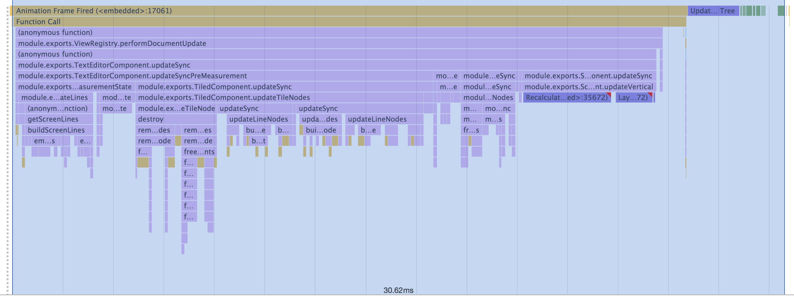
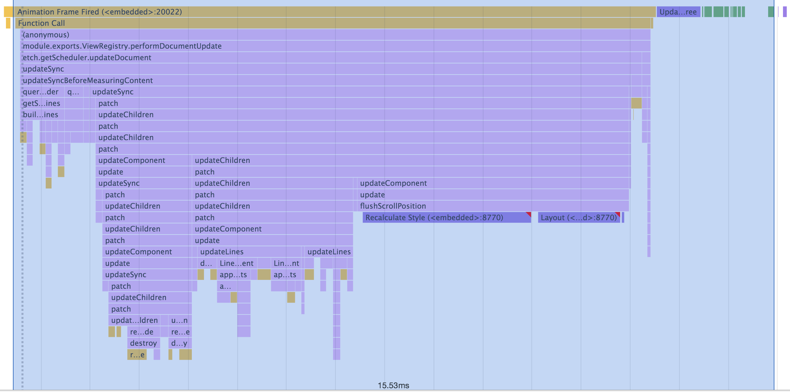
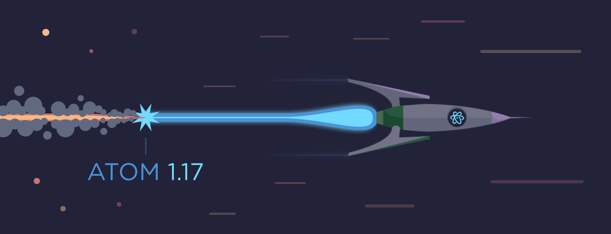

-
Introducing Atom-IDE
September 12, 2017
damieng

GitHub, in collaboration with Facebook, are pleased to announce the launch of Atom-IDE - a set of optional packages to bring IDE-like functionality to Atom.
Read more -
Atom 1.19
August 8, 2017
iolsen
Today’s Atom 1.19 release offers improved performance and responsiveness via major architectural updates and an upgrade to Electron 1.6.9.
Read more -
A new approach to text rendering
June 22, 2017
nathansobo
In Atom 1.19, we’re landing a complete rewrite of the text editor’s DOM interaction layer that improves rendering performance and simplifies the code. Prompted by the availability of some valuable new DOM APIs with the upgrade to Electron 1.6, we decided to start over from the beginning and take a critical look at the structure and performance of every aspect of our DOM interaction. You should observe the biggest difference when scrolling. Here is a typical frame after scrolling by 15 lines before and after the rewrite:
Before: Scrolling 15 lines in Atom 1.18 (~30ms):

After: Scrolling 15 lines in Atom 1.19 (~16ms):

About a 50% improvement, give or take some noise on any given frame.
Read more -
Atom 1.18
June 13, 2017
-
Docks Deep Dive
May 23, 2017
matthewwithanm

This is a guest post written by Facebook’s Nuclide team member @matthewwithanm. He tells the story how the new docks got introduced to Atom and how package authors can make great use of them.
One of the things that the Nuclide team has always really loved about Atom is how it lets us extend and experiment with UI. Tools like Outline View, Console, Diagnostics, and the Debugger all need custom UI and, up until recently, their natural home was Atom’s Panels. Located at the edges of the window, panels are a great place for these kind of graphical tools but they have a couple of issues.
Read more -
Git and GitHub Integration comes to Atom
May 16, 2017
BinaryMuse

A text editor is at the core of the developer’s toolbox, but many other useful pieces of software coexist along with it, such as Git and GitHub. Starting today, Atom adds Git and GitHub integration directly in Atom via the GitHub package. This is a new core package included with Atom and is available right now in today’s 1.18 beta release. Be sure to check out github.atom.io for more information!
Read more -
Atom 1.17
May 16, 2017
-
Improving Startup Time
April 18, 2017
as-cii
Over the last months, the Atom team has been working hard on improving one of the aspects of the editor our users care about the most: startup time. We will first provide the reader with some background about why reducing startup time is a non-trivial task, then illustrate the optimizations we have shipped in Atom 1.17 (currently in beta) and, finally, describe what other improvements to expect in the future.

Read more -
Atom 1.16
April 12, 2017
andreagriffiths11
-
Atom 1.15
March 9, 2017